Full-service design
For couples who value high-impact, cohesive floral environments. From mood boards and palette development to venue walkthroughs and professional onsite installation, every detail is handled.


Custom, garden-inspired florals designed by Alysha Jeppson in Alpine, Utah. Rooted in softness, whimsy, and just the right amount of floral magic.
Every arrangement tells a story, and your special day deserves florals as unique as your love. From intimate elopements to grand celebrations, we craft whimsical designs that capture the essence of your vision.
Inquire todayInvestment + experience
When you invest in Foundry Floral, you are choosing the vibrant beauty of premium, locally grown blooms, the certainty of meticulous care, and a hands-on custom design process created specifically with you in mind.
Service levels
For couples who value high-impact, cohesive floral environments. From mood boards and palette development to venue walkthroughs and professional onsite installation, every detail is handled.
For intimate weddings and elopements. Choose from seasonal Foundry Floral palettes for refined personal flowers and centerpieces, available for studio pickup.
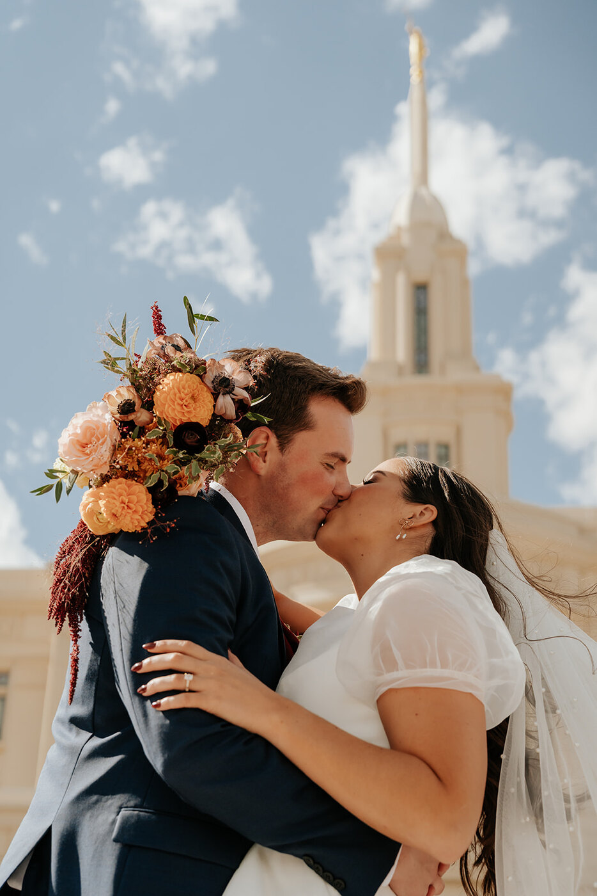
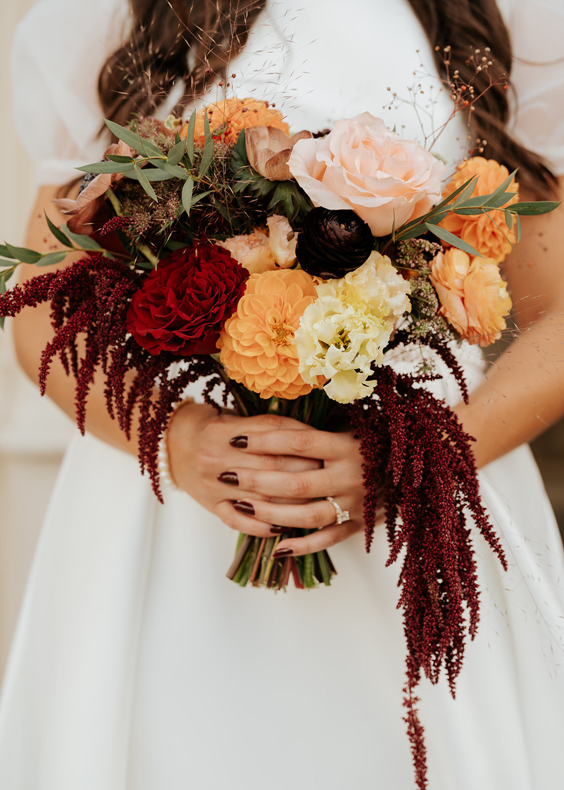
The signature collection
Ceremony arches and backdrops, hanging installations, staircase and mantel florals are custom quoted for mechanics, floral density, and onsite labor.
Starting points
Every collection is customized for your vision, season, venue, and the flowers available at their best.
from $1,500
For intimate gatherings and simple elegance. Personal flowers, petite centerpieces, bud vases, proposal call, custom look book, delivery and setup.
from $2,500
For midsize weddings with personal touches. Expanded wedding-party flowers, signature centerpieces and custom floral accents.
from $3,500
For full weddings with lush ceremony design. Signature personal flowers and reception pieces, plus custom-quoted aisle and arch florals.
from $6,000
For unforgettable floral impact. A full visual story with large-scale, custom-quoted installations and extra design support.
Service & Logistics Fee: starting at 10% for labor, delivery, setup and professional installation. Utah sales tax applies to physical goods. Rentals are available to Foundry Floral clients.
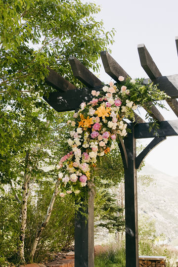
The custom gallery
Organic ceremony structures, hanging florals, and designs that look as if they grew into the venue.
A Utah bride's guide
Seasonality is the silent partner in high-end floral design. Local blooms at the height of freshness bring texture, fragrance and a true sense of place.
Peony, ranunculus, sweet pea, lilac, tulip, hellebore, anemone and foxglove.
Best for fragrancePeony, ranunculus, sweet pea, delphinium, larkspur, poppies and snapdragons.
Romantic pairingsQueen Anne's lace, scabiosa, lisianthus, zinnia, cosmos, delphinium and yarrow.
Garden whimsyDahlia, amaranthus, lisianthus, zinnia, celosia, cosmos, thistle and tuberose.
Dahlia seasonDahlia, amaranthus, chrysanthemum, scabiosa, marigold, gomphrena and rudbeckia.
Sunset palettesRecent work
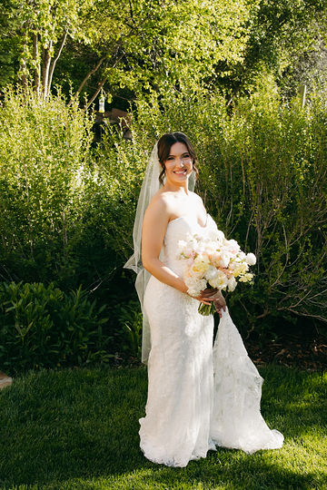
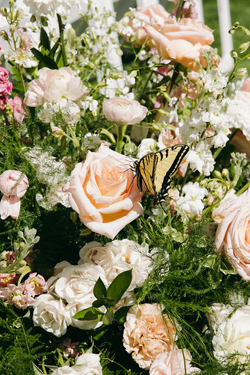
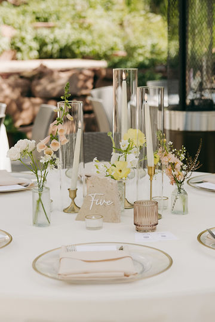
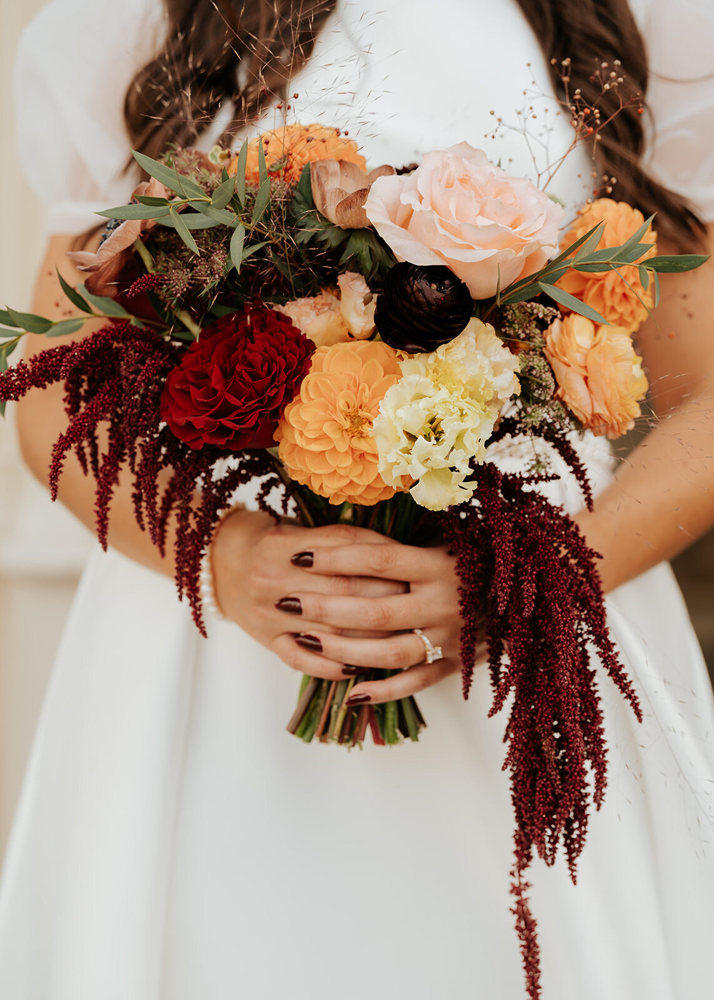
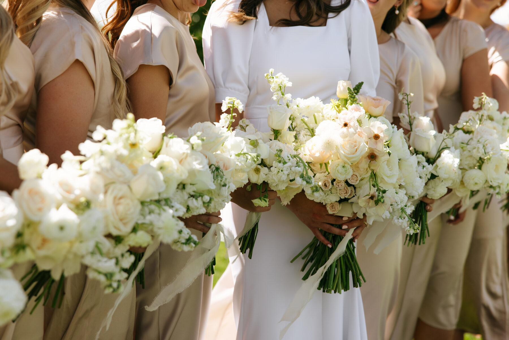
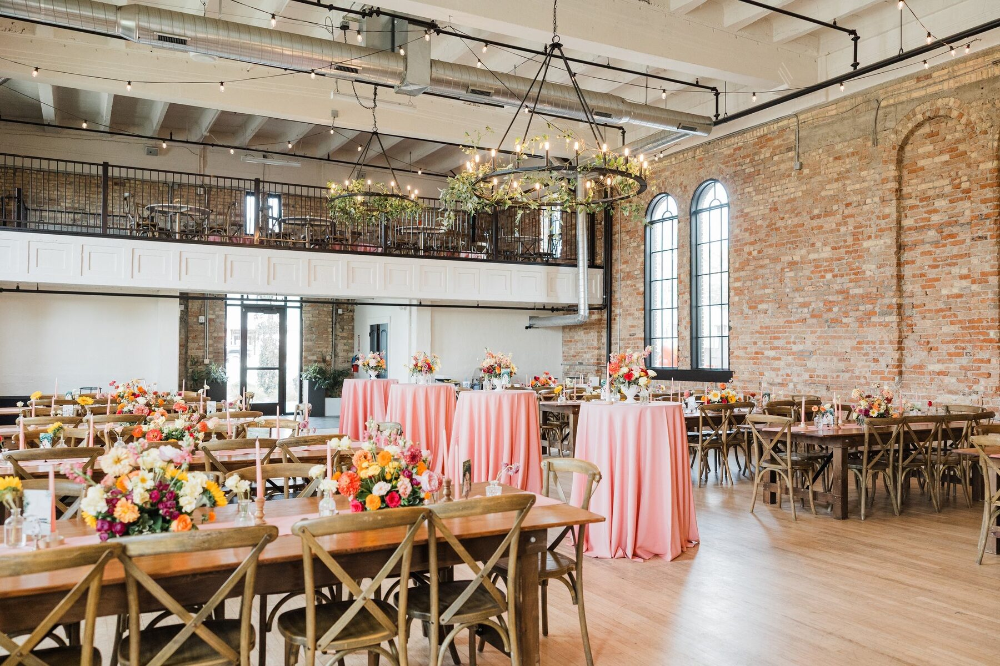
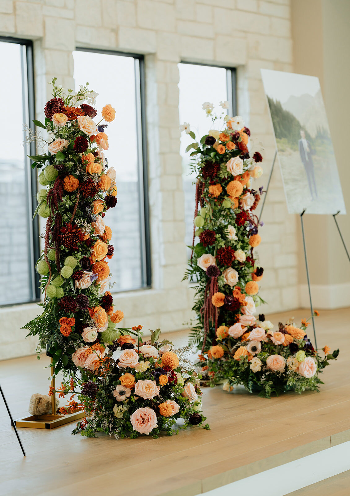
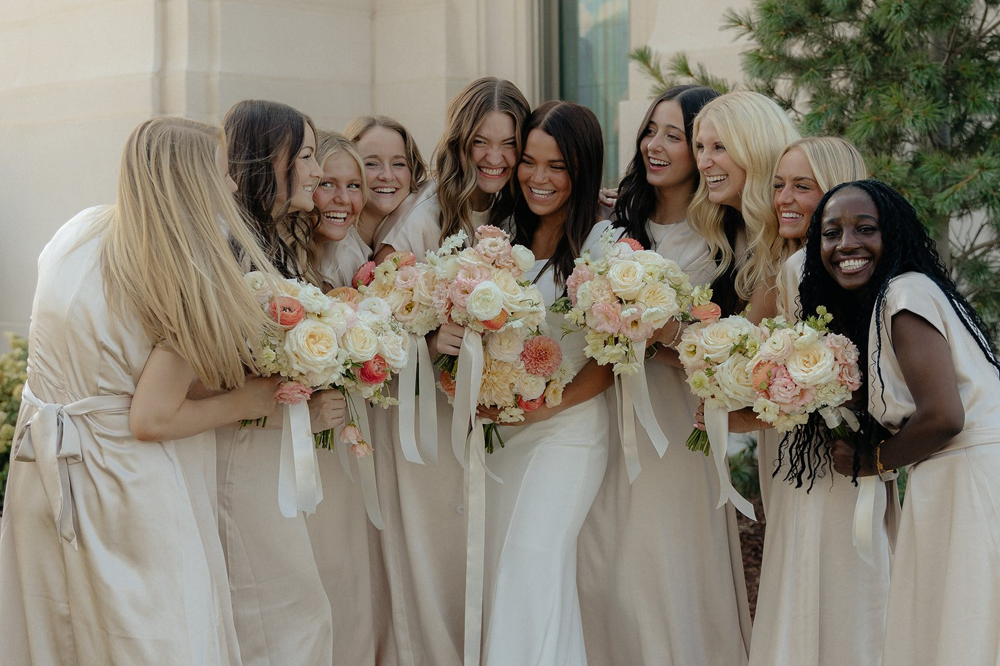
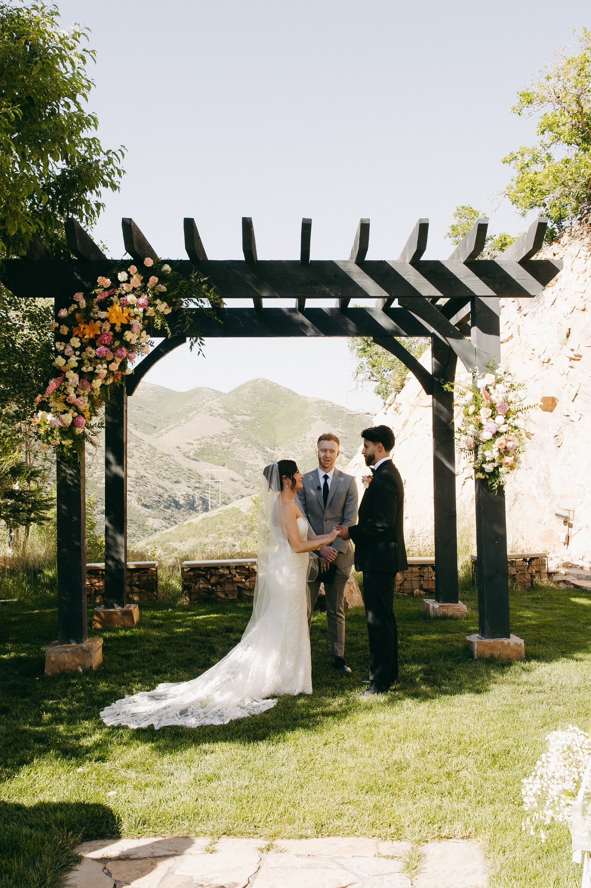
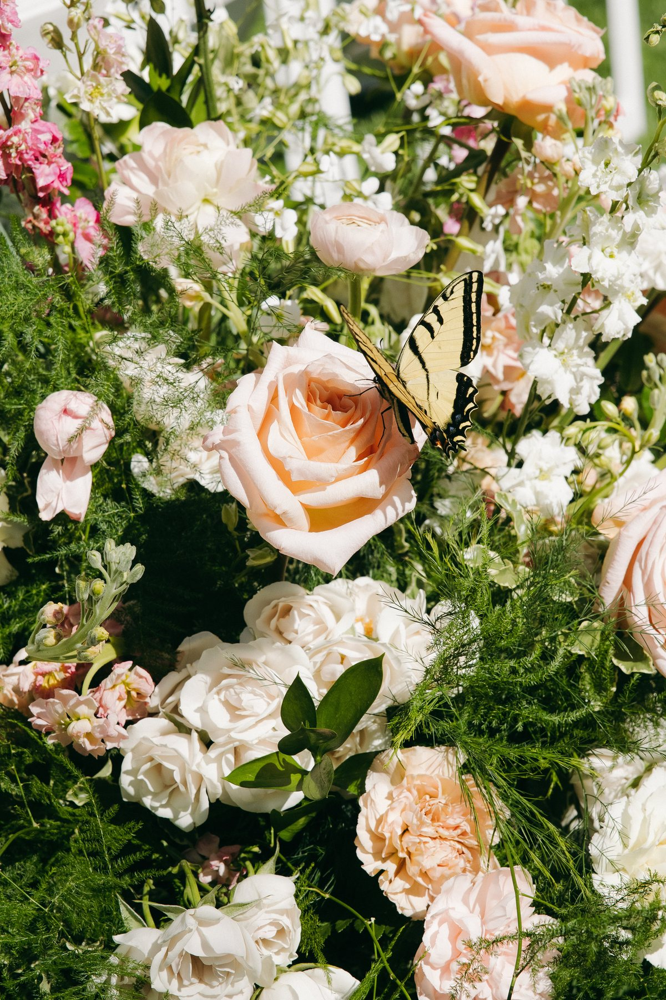
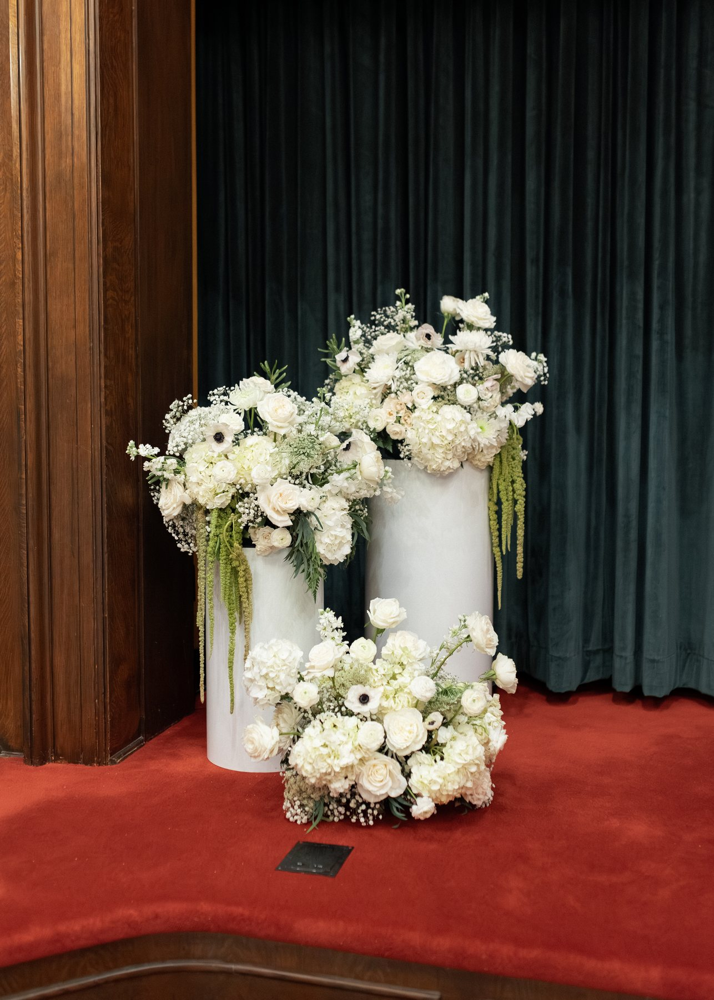
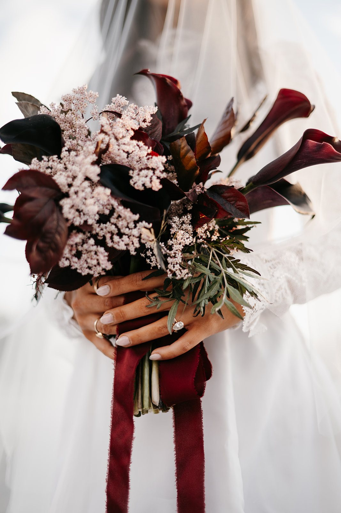


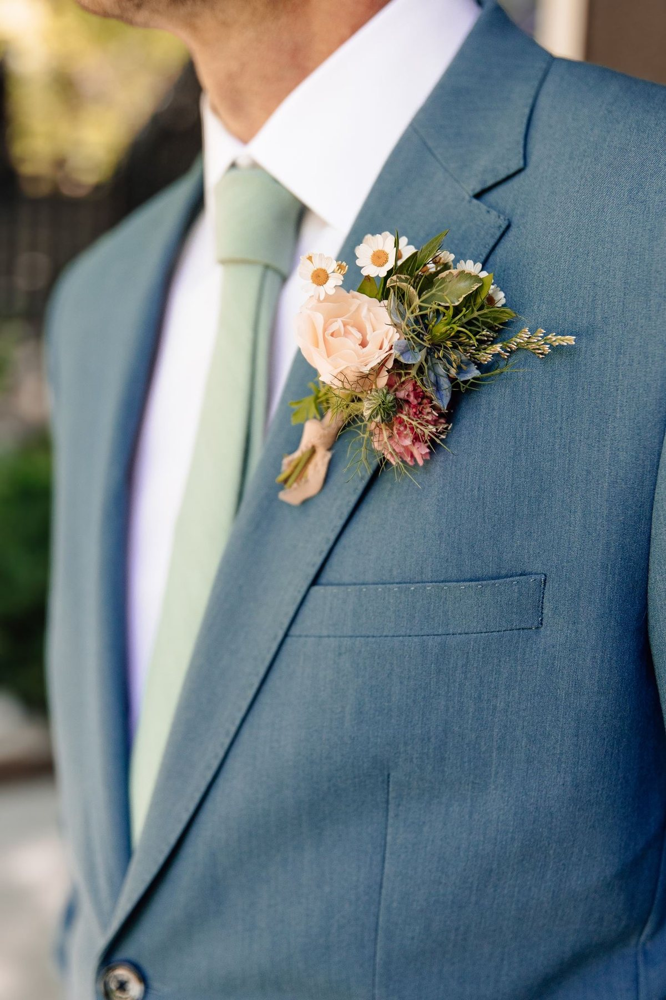
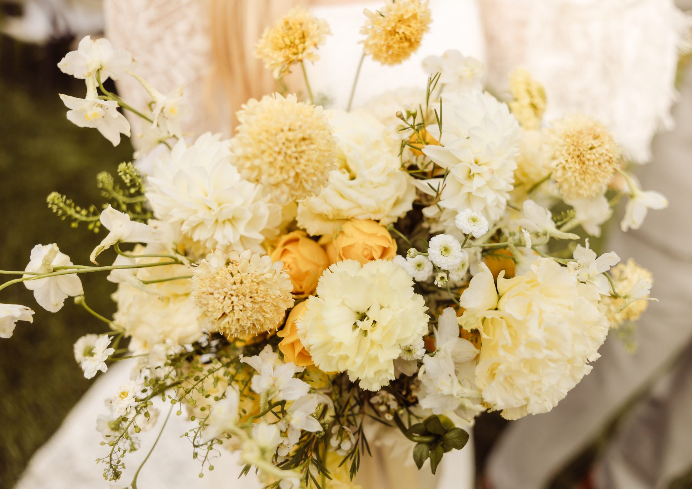
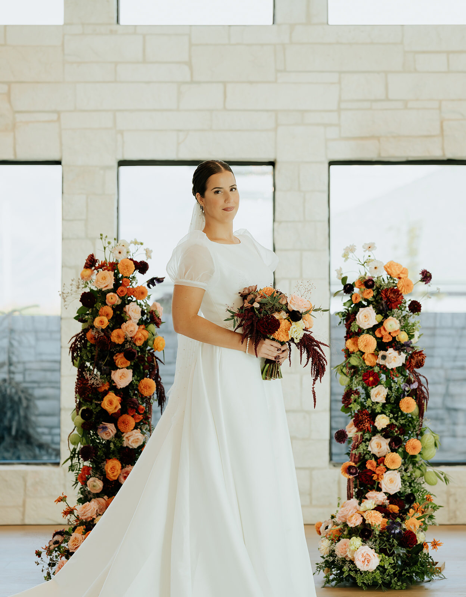
Meet the florist
I believe wedding flowers should feel like poetry: wild, romantic and a little unexpected. Foundry Floral began as a creative calling and grew into a continuation of three generations of floral artistry in my family.
My style is organic and unstructured, with seasonal textures and thoughtful details that feel authentically yours. When we work together, you get a collaborator who listens to your story and translates it into flowers.
The Foundry process
Share your date, venue, color story and the feeling you want to create.
Receive a custom event proposal with visual direction and transparent line-item pricing.
Secure your date with a deposit. Foundry Floral handles sourcing, design and setup.
Let's build something beautiful
Share what you're dreaming up through the form below.